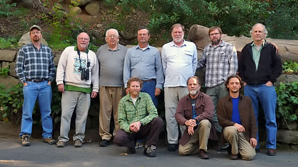

Current CBRC Membership

As of the January 2011 Election

Vice-Chair
Secretary
Members through 2011
Members (through 2012)
Members (through 2013)
Recent Members through 2010

Back row, left to right: Dave Compton, Jon L. Dunn, Guy McCaskie, Paul Lehman, Joseph Morlan, Brian
Sullivan, Dan Singer
Front row: Jim Tietz, Kimball Garrett, Oscar Johnson
Photo at Santa Barbara, California © January 2011